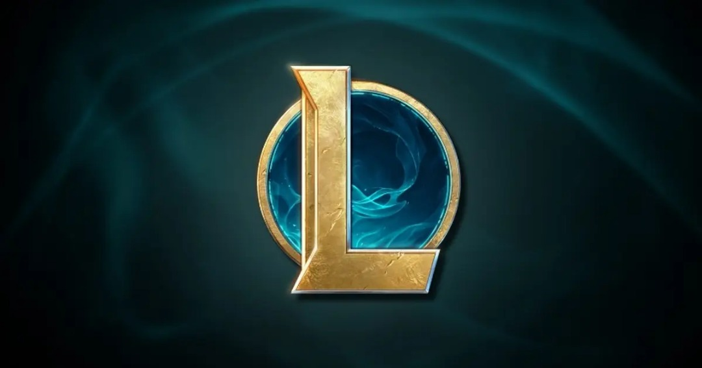
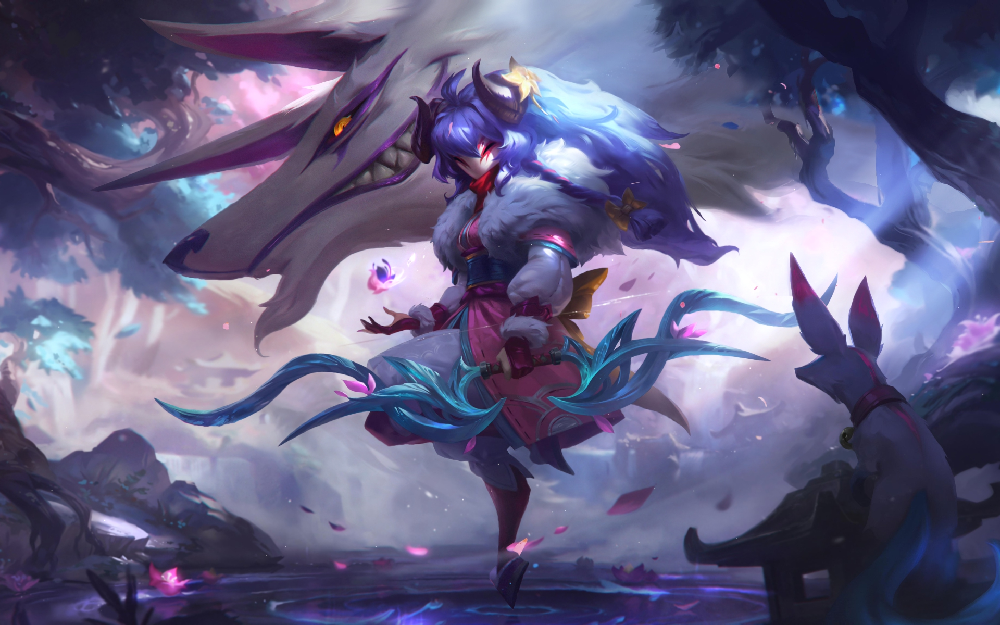
Kindred
in League of Legends is a dual champion representing life and death. Comprised of Lamb, who symbolizes peaceful death, and Wolf, who represents the hunt, they mark enemies for death and execute them.
Their gameplay revolves around mobility, area control, and punishing marked targets.
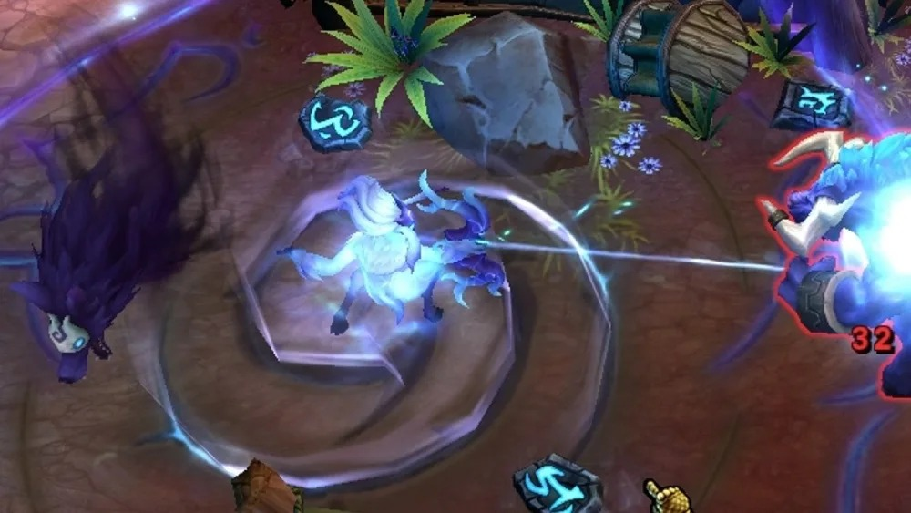
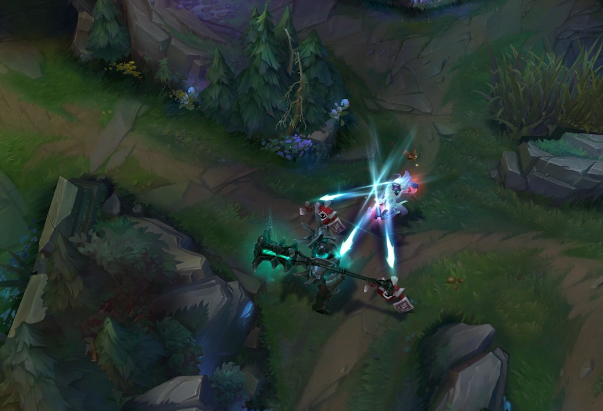
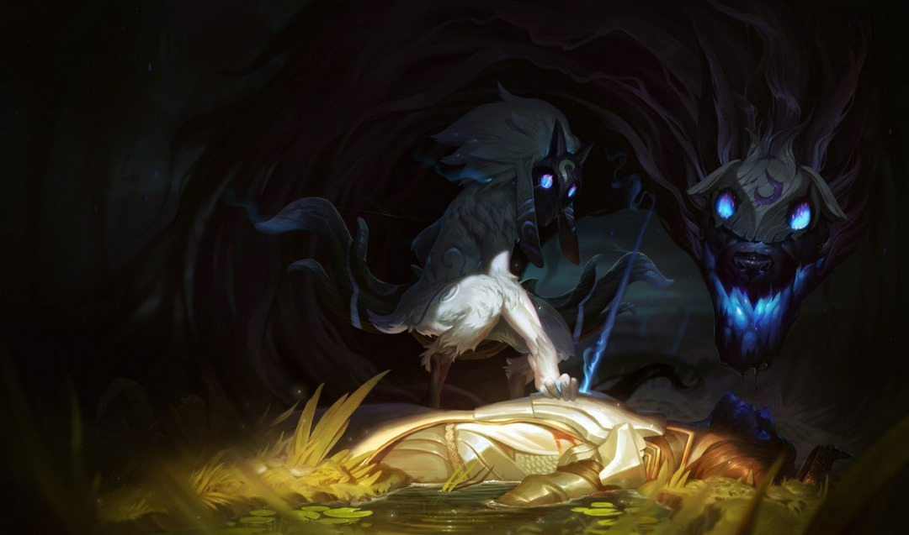
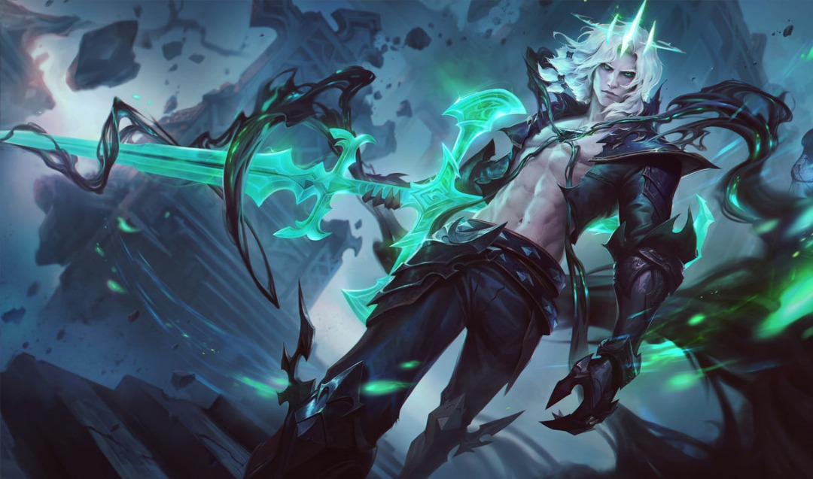
Viego
, the Ruined King in League of Legends, is a tragic, undead monarch who seeks to revive his dead queen, causing chaos with his obsession.
He possesses enemies to use their abilities and thrives in fights by taking over fallen champions.
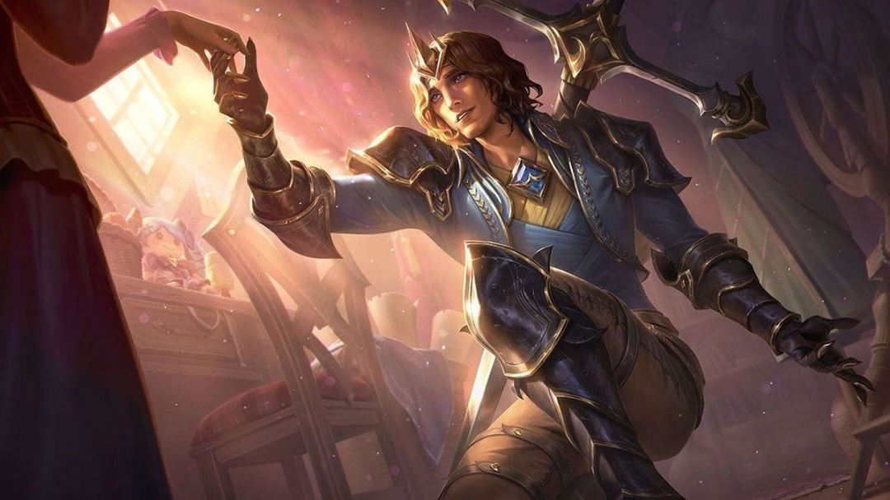
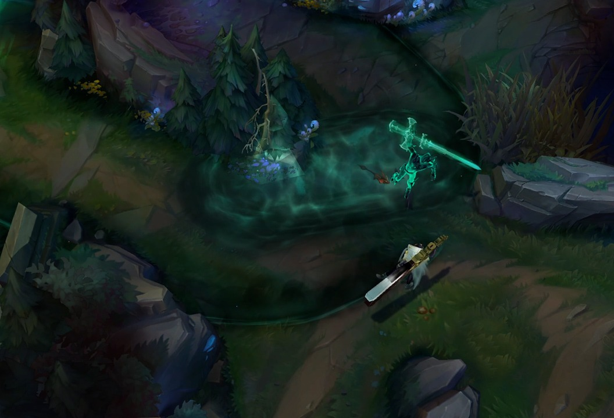
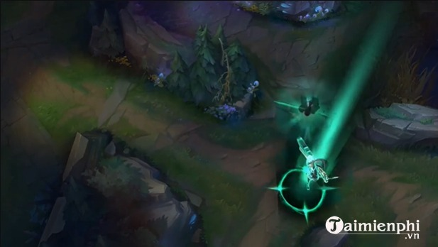

AHRI
, the Nine-Tailed Fox, is a seductive and elusive mage who uses her charm and magic to deceive and control her enemies.
With her orb of power and fox-like agility, she manipulates foes and seeks to uncover her mysterious origins.
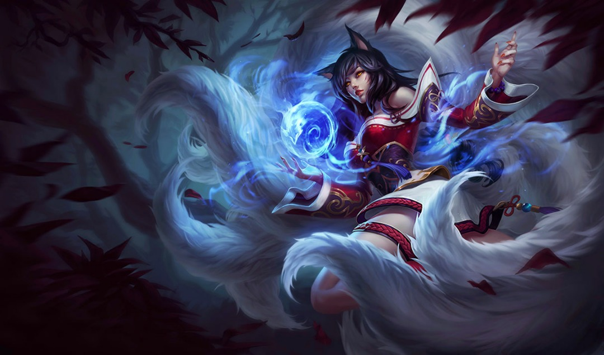
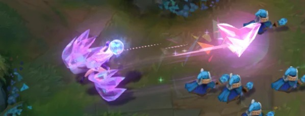
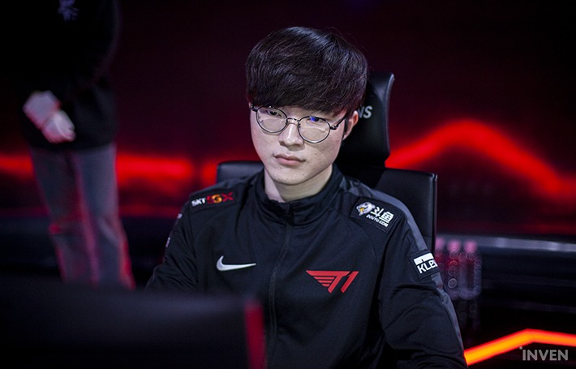
Back to TOP